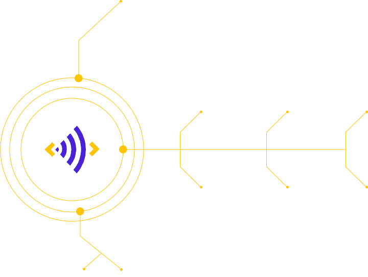

Advertising
Audience
Engagement
Engagement
Audience
Measurement
Measurement

EchoAD
Broadcast
Broadcast
EchoAD
Digital
Digital
EchoAD
Geo
Geo
EchoAD
Image
Image
Echo SURVEY
EchoQUIZ
EchoVOTE
EchoSHOW
EchoTV
EchoMUSIC
EchoMETER
EchoDATA
How it works
ECHOTAG is revolutionary and useful. It provides an ROI-increasing solution to brands and allows for the
collection of priceless user activity data for future analysis by market researchers.
ECHOTAG is straightforward and easy to implement:
Step 1
•
Register the ad creative and apply a watermark, if applicable
For digital ads:
Ad manager connects to the cloud-based ECHOTAG
Content Management Server to create a corresponding Content Item record for the ad to be delivered
digitally.
For aired ads:
After the Content Item is created, the ad manager
applies a human inaudible watermark to the audio track of the ad.
Step 2
•
Add offers and promotions related to the ad
Ad manager uploads the ad related companion info such as coupons and offers to
ECHOTAG Content Management Server.
Step 3
•
Port ECHOTAG Decoder to a mobile app
Popular mobile apps, broadcaster’s proprietary mobile apps, as well as SmartHome
devices adopt the ECHOTAG Watermark Decoder SDK.
Step 4
•
Port ECHOTAG Decoder to a mobile app
Popular mobile apps, broadcaster’s proprietary mobile apps, as well as SmartHome
devices adopt the ECHOTAG Watermark Decoder SDK.
Step 5
•
The ad is captured – the offer is shared
At the time of broadcast or digital delivery, the ad is captured by the user’s
mobile app, and the companion offer is stored and can be shared with friends.
Step 6
•
Measure audience and collect activity data
ECHOTAG collects all users’ actions related to the ad, and makes the collected
data available to the advertisers, market researchers such as Nielsen and TNS and polling
organizations.
Frequently Asked Questions
With the use of ACR (Automated Content Recognition) technologies, ECHOTAG provides turnkey PaaS
(Platform as a Service) software solution for adding mobile interactivity to over-the-air and digital
advertising campaigns mobile devices, television, radio, streaming media, and in the local shopping
center.
- ECHOTAG allows ad producer to register the ad with ECHOTAG server by adding to it an audio
fingerprint as well as the companion info such as a coupon or a discount offer.
- The registered ad is captured by the consumer’s mobile app at the time of broadcast or digital
delivery, or in proximity with the advertised product.
- The companion offer is stored in the mobile device, so the user is able to use it in the store
or online, as well as to share it with friends.
With ECHOTAG, any ad creative delivered to the mobile device or broadcasted over the air is
being captured, and the user is able to follow or directly act on the accompanying promotion or
offer.
In the digital world, there are Google AdSense, Yllix Media and many others who provide data on
ad impressions and clicks. ECHOTAG goes far beyond that. It provides for the post-delivery
interaction, retrievable offers, viral sharing, consumer identification, and precise retargeting.
In the world of over-the-air and cable broadcast, there are several service providers, such as
ActusView, Mufin and Alphonso, which monitor the ad impressions across networks. However, none of
them goes beyond registering the impression, leaving brands to set up a supporting system to
retarget the consumer on their own. The end-user for these platforms (the TV viewer or radio
listener) is not presented with an option to interact with the promotion (except dialing a certain
800 phone number), and is not even aware of the fact that their impression was registered.
ECHOTAG does register the impressions on TV and radio too, but for us it is only the first step.
As with the digital ads, ECHOTAG focuses on providing the unique set of post-delivery features for
all: broadcasters, brands, ad agencies, and the consumer.
We strongly believe that there is no way to improve consumer engagement without presenting
consumers with a straightforward incentive and the way to take advantage of it.
We stand-alone and differ from all other audience metrics vendors by offering a host of
post-delivery services in addition to ad impression data; providing an ability to deliver
complementary content such as offers and promotions to the user’s mobile devices. Thus, we enrich
the viewer’s experience and make a much better use of the broadcasted ad, delivering far more
valuable audience engagement and recognition.
Users are encouraged to interact with the captured offer, save it, or share it with friends,
thus empowering the viral distribution of the offer. In 2015, 43% mobile device users overall and
90% of millennials shared deals socially, with each user having an average 200 social connections
to share them with.
We follow the viewer’s subsequent activities such as clicks and the number of shares related to
the captured offers, so content producers do not have to guess as to how much coverage they are
getting with their deployed creative. We also collect data on engagement from secondary recipients
(friends), and continue to do so for the entire period in which the ad is still running.
In summary, while other ACR platforms simply confirm the delivery of content, ECHOTAG provides a
unique set of user incentive and call-to-action features, as well as post-delivery capabilities not
available anywhere else on the market.
From a technological standpoint, unlike others, the ECHOTAG Platform is available as a portable
middleware for integration with existing software over its server-to-server API and Mobile SDK.
Popular mobile apps, broadcaster’s proprietary mobile apps, as well as SmartHome devices adopt the
ECHOTAG Watermark Decoder SDK.
Consumer will never lose valuable savings broadcasted over media, delivered digitally, or available
locally, and even share them with friends.
Brands increase their ROIs by getting better engagement with their consumers, as well as more
accurate statistics on their ad campaigns.
Agencies and mobile apps extend the portfolio of their offerings to brands by adding ad-capturing
services the brands are to be paying for in the form of PPC and CPM.
The market researchers improve the reliability of their data by adding the real life statistics on
consumer’s reaction to the ads.
With ECHOTAG, broadcasters and content networks will measure and identify the audience for every
program, conduct interactive for-the-prize quizzes and surveys, present sponsors and their offers on
the viewer’s mobile device during a contest, quiz or a survey broadcast, and receive real-time
statistics on audience engagement.
Consumer continues to use popular mobile apps provided by TV, radio and other broadcasters and
shopping chains, assuming that the ECHOTAG Decoder SDK is integrated within those apps.
Company
It is aimed to raise advertising ROI by changing the way brands create and utilize ad campaigns. It
provides the means for better engagement of ads, for sharing ads socially, as well as for collecting and
analyzing the consumer reaction data.
ECHOTAG is a tandem of technology and service. It provides innovative application platform for marking,
capturing, and storing of broadcasted audible content for further use by the listener.
ECHOTAG is a fusion of science and market vision, and it is brought to you
by professionals:
Alex Okmianski
Business Development
Victor Pasilis
Business Analysis
Yury Arane
Technology
Anatoly Tkach
Business Development
Alex Rapoport
Business Development
Oleg Rivkin
Legal
Integrate ECHOTAG
ECHOTAG provides integrators with fully equipped sandbox environment.
Implementation of ECHOTAG features within existing IT infrastructure would require
porting of the ECHOTAG Mobile SDK into the mobile app, so that app would be able to capture the Ad ID or an
audio watermark embedded within the ad’s audio track.
If required, the server-to-server integration is also available over the server-side
API for getting the audio tracks watermarked and affiliated deals/offers added to them programmaticall
ECHOTAG News
Contact Us
Main office
1500 Wyatt Drive, Suite #2
Santa Clara, CA 95054, USA
If you are interested in ECHOTAG and wish to join our growing partner
ecosystem, please complete the form below and we will get back to you shortly. Thanks for your interest.